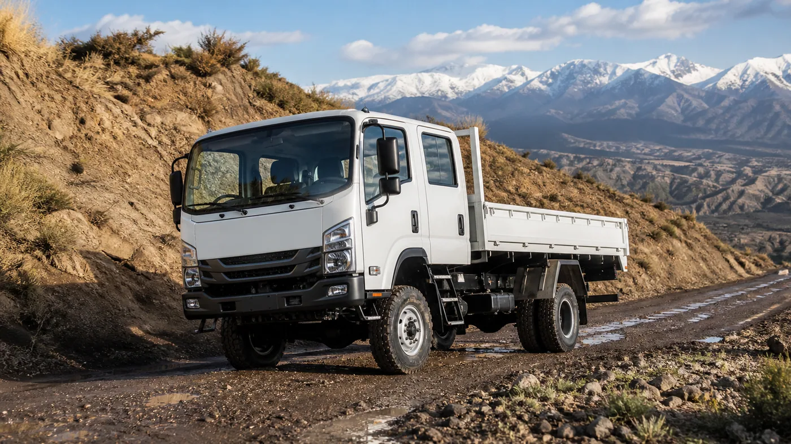

Volkswagen Camiones y Buses puso en marcha en la Argentina el programa Delivery 4x4 Experience, una gira de pruebas dinámicas destinada a mostrar el desempeño del Delivery 11.180 4x4 en condiciones cercanas al trabajo real. La iniciativa fue presentada a la prensa en Baradero y se desarrollará entre septiembre y noviembre de 2026.
El recorrido anunciado contempla actividades en Mendoza, Neuquén, Córdoba, Misiones y Mar del Plata, además de presentaciones vinculadas con sectores productivos. La intención no es limitar la demostración a una pista: la marca busca acercarse a regiones donde la minería, el petróleo, el agro, la construcción y los servicios necesitan salir del pavimento.
Una demostración en escenarios reales
El primer contacto incluyó sectores de vadeo, pendientes y superficies de baja adherencia. El objetivo del programa es que responsables de flota y conductores puedan comprobar de manera directa la capacidad de tracción, la maniobrabilidad y el comportamiento del conjunto antes de tomar una decisión comercial.
Esta modalidad tiene valor porque una ficha técnica no muestra cómo responde el camión cargado, cómo se conecta la doble tracción o cuánto espacio necesita para maniobrar. Una prueba seria debe realizarse con supervisión, respetando los límites del fabricante y diferenciando un circuito controlado de una operación cotidiana.
Cómo está configurado el Delivery 11.180 4x4
La ficha oficial identifica un motor Cummins ISF 3.8 de cuatro cilindros, inyección common rail y tecnología SCR para cumplir Euro V. Declara 177 CV a 2.600 rpm y un par máximo de 600 Nm entre 1.100 y 1.700 rpm. Esa entrega a bajo régimen es importante al iniciar la marcha sobre terreno difícil.
La transmisión es una Eaton ESO 6106 manual de seis velocidades. Una caja de transferencia Marmon Herrington incorpora reducción 2:1 y permite trabajar en 4x2 o conectar la tracción 4x4. El conductor también dispone de selección de alta y baja, junto con cubos en el eje delantero.
El chasis modular utiliza largueros rectos de perfil constante y se complementa con suspensión reforzada. La distancia entre ejes informada es de 4.000 milímetros. La capacidad técnica total llega a 10.800 kilos y la capacidad máxima de tracción a 13.200, aunque los límites efectivos dependen de la legislación, el carrozado y la configuración final.

Para qué trabajos fue pensado
Volkswagen menciona operaciones petroleras y mineras, construcción, agro, asistencia técnica, turismo aventura y combate de incendios forestales. En esos usos, la doble tracción puede marcar la diferencia para mantener la movilidad sobre barro, ripio, pendientes o caminos deteriorados.
La versatilidad no significa que cualquier carrocería sea adecuada. La distribución de pesos, el centro de gravedad, los voladizos y la altura modifican el comportamiento. Una cisterna, una caja de servicio o un equipo contra incendios plantean exigencias distintas y deben respetar la capacidad de cada eje.
Qué conviene observar durante una prueba
- Acceso y ergonomía: postura, visibilidad, regulación del asiento y facilidad para operar los selectores.
- Tracción: procedimiento de conexión, respuesta en alta y baja y comportamiento sobre poca adherencia.
- Maniobrabilidad: radio de giro y control a baja velocidad en espacios reducidos.
- Frenado: respuesta del conjunto y control en descensos, siempre dentro de las instrucciones de uso.
- Carrozado: interferencias, reparto de carga y acceso a puntos de mantenimiento.
- Servicio: disponibilidad de repuestos y asistencia en la zona donde trabajará la unidad.
El mantenimiento de un 4x4 de trabajo
Un camión que circula fuera del asfalto requiere controles más frecuentes que una unidad dedicada exclusivamente a ruta. Barro, polvo, agua y piedras afectan filtros, fuelles, crucetas, retenes, frenos y conexiones eléctricas. Después de una jornada exigente conviene inspeccionar pérdidas, golpes y acumulaciones que puedan ocultar una falla.
La caja de transferencia y el eje delantero agregan componentes al tren motriz. Sus lubricantes, juntas y mecanismos de acople deben seguir el plan del fabricante. También es necesario usar neumáticos compatibles entre sí: diferencias de medida o desgaste pueden generar tensiones cuando la doble tracción está conectada.
Una herramienta específica, no una solución universal
La tracción integral mejora la capacidad de avance, pero suma peso, complejidad y costo. Una empresa que opera casi siempre sobre asfalto debe comparar ese beneficio con el consumo, mantenimiento y carga útil. En cambio, para una cuadrilla rural o una operación minera, evitar interrupciones puede justificar ampliamente la configuración.
El valor del Delivery 4x4 Experience estará en permitir esa evaluación con datos propios. Antes de comprar, la empresa debería reproducir el tipo de terreno, carga y recorrido que enfrenta realmente, y calcular el costo total de operación en lugar de decidir únicamente por la impresión de manejo.